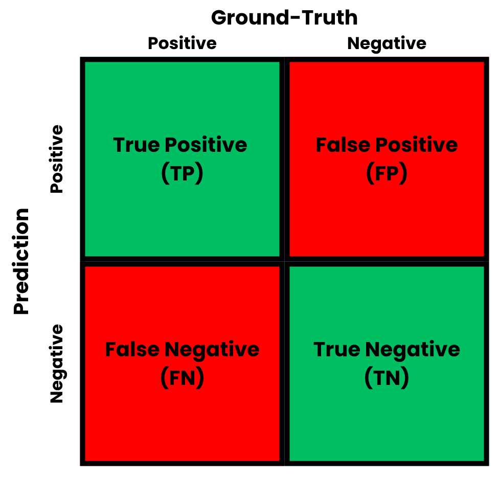

import numpy as np
import matplotlib.pyplot as plt
from sklearn.datasets import make_regression
from sklearn.model_selection import train_test_split
from sklearn.linear_model import LinearRegression
from sklearn.metrics import mean_absolute_error, mean_squared_errorModel Evaluation
The last step in a Machine Learning pipeline is the evaluation of the generalization of the models. Here, some notable metrics are presented, both for classification and regression tasks.
After the procedure explained in Model Selection, the test split is reserved for evaluating the generalization of the chosen model in unseen data. For that, functions that are usually called metrics – not necessarily in the mathematical sense – are used. These functions measure how close the model predictions are with respect to the ground-truth values in the test set. As each metric measures different aspects of the predictions, they should be used within the context of each problem.
Regression
In a regression task, the targets are continuous values in \(\mathbb R\). A very common metric for these problems is the Mean Absolute Error (MAE), which is given by: \[ \text{MAE} (\boldsymbol y, \boldsymbol{\hat y}) = \frac{1}{N} \sum_{i=1}^N |y_i - \hat{y}_i|, \tag{1}\] where \(\boldsymbol y \in \mathbb R^N\) is the target vector, \(\boldsymbol{\hat y} \in \mathbb R^N\) is the predicted vector and \(N\) is the number of observations in the test set. The MAE is not substantially affected by outliers, as the errors are calculated linearly, and is measured in the same units as the target.
Another metric for regression is the Mean Squared Error (MSE). It is given by: \[ \text{MSE} (\boldsymbol y, \boldsymbol{\hat y}) = \frac{1}{N} \sum_{i=1}^N (y_i - \hat{y}_i)^2. \tag{2}\] In contrast to the MAE, the MSE is measured in squared target units, and is more sensitive to outliers – as the error terms are squared. Closely related to the MSE, the Root Mean Squared Error (RMSE) is given by: \[ \text{RMSE} (\boldsymbol y, \boldsymbol{\hat y}) = \sqrt{\frac{1}{N} \sum_{i=1}^N (y_i - \hat{y}_i)^2}. \tag{3}\] It is measured in target units, being more interpretable than MSE.
Code: Regression
Classification
In a classification task, the targets are in a discrete set \(\{c_i\}^{C}_{i=1}\), where \(C\) denotes the number of classes. A very important object in classification is the confusion matrix. It contains all pairs of predicted and ground-truth targets, which helps the comprehension from the metrics. A confusion matrix for a single class is depicted in Fig. 1.

To derive the metrics, components found within the confusion matrix are used. Let \(\text{TP}_i\) be the number of true positives, \(\text{TN}_i\) be the number of true negatives, \(\text{FP}_i\) be the number of false positives, and \(\text{FN}_i\) be the number of false negatives for class \(i\), which contains \(N_i\) observations.
The first metric for classification is the accuracy, given by: \[ \text{Accuracy}_i (\boldsymbol y, \boldsymbol{\hat y}) = \frac{\text{TP}_i + \text{TN}_i}{N_i}, \tag{4}\] It measures the number of predictions that were correct. Although it is easy to interpret, accuracy is susceptible to class imbalance – when classes have different proportions in the dataset. In these cases, classes with higher number of samples dominate the overall accuracy value.
To address the limitations of accuracy in imbalanced datasets, other metrics are required. One of them is precision, which measures the accuracy of the positive predictions, that is: \[ \text{Precision}_i (\boldsymbol y, \boldsymbol{\hat y}) = \frac{\text{TP}_i}{\text{TP}_i + \text{FP}_i}, \tag{5}\] Precision is important when the cost of a false positive is high. On the other hand, recall measures the amount of positive instances that were correctly identified. Recall is calculated by: \[ \text{Recall}_i (\boldsymbol y, \boldsymbol{\hat y}) = \frac{\text{TP}_i}{\text{TP}_i + \text{FN}_i}, \tag{6}\] Recall is important when the cost of a false negative is high.
Since precision and recall involve a trade-off with respect to false positives and negatives, the \(F_1\) score unifies both measures. It is defined as the harmonic mean of these two metrics, given by: \[ {\text{F}_1}_i (\boldsymbol y, \boldsymbol{\hat y}) = 2 \cdot \frac{\text{Precision}_i \cdot \text{Recall}_i}{\text{Precision}_i + \text{Recall}_i}. \tag{7}\] The \(F_1\) score is considered to be a very robust metric for classification, even in imbalanced scenarios.
All the previous definitions involved calculating metrics for a single class. When dealing with multiple classes, it is necessary to aggregate these metrics into overall scores. For that, two main methods are considered. One of the most used options is macro-averaging, which computes a certain metric \(\mathcal M\) for each class independently and then takes the unweighted arithmetic mean of these results: \[ \text{Macro-Average}(\mathcal M, \boldsymbol y, \boldsymbol{\hat y}) = \frac{1}{C} \sum_{i=1}^C \mathcal M_i. \] Macro-averaging is useful to ensure that the model performs equally well on smaller or minority classes, giving equal weight to each class’s performance.